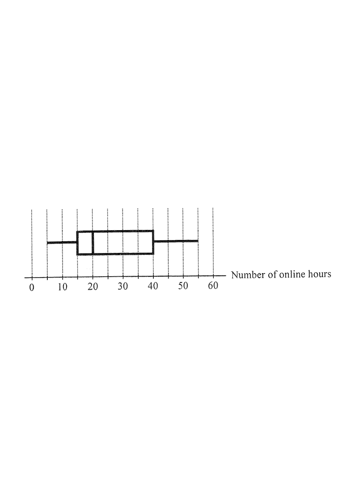

Reading: min = 5, Q1 = 15, median = 20, Q3 = 36, max = 52
The box-and-whisker diagram below shows the distribution of the numbers of online hours spent by a class of students in a certain week. Find the lower quartile of the distribution.

Question. The box-and-whisker diagram shows the marks of a class in a test, where the minimum is \(12\), the median is \(46\), the upper quartile is \(58\), the maximum is \(72\) and the inter-quartile range is \(28\). Find the lower quartile.